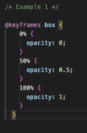
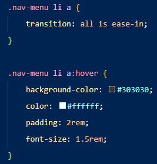
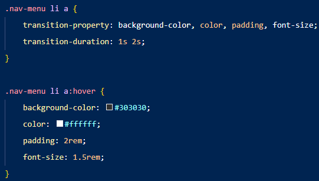
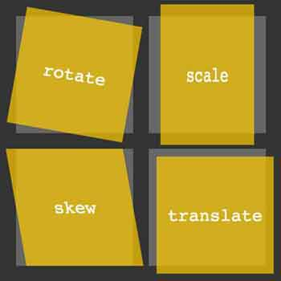
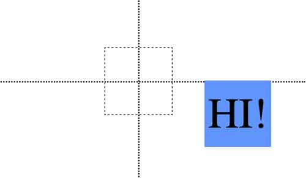
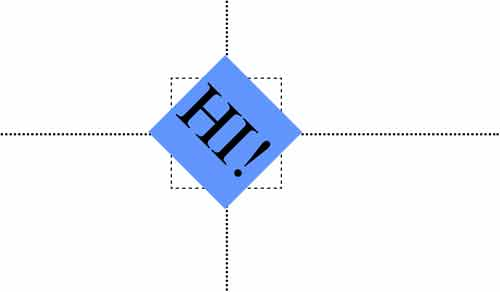
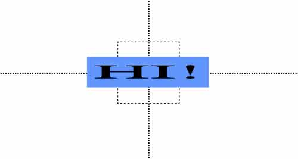
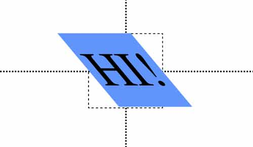
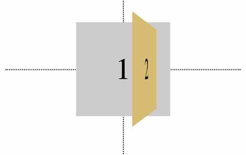
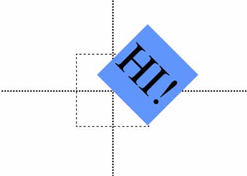

Keyframes are most important part of creating animations in css. Their job is define the steps in an animation sequence. This allows us to control how a set element changes its style over a set duration. The keyframes specify the behaviour of one cycle of the animation; the animation may iterate zero or more times.The way that key frames are defined are by using: `@keyframes` rule. Then the name we set set for the animation sequence.
Keyframe Example
In the example we see here that `box` the name of the animation sequence.
The percentages
0%, 50%, 100% represent “points in time” during the animation.
We can also use “from” and “to” instead of 0% and 100 %
In these points in time we can style the element. In this example we choose to 0, 0.5 and 1 opacity during those 3 stages that we set.
All these nested in a keyframe-block.

Keyframe Name
The names are fully case-sensitive; two names are equal only if they are codepoint-by-codepoint equal. The
additionally excludes the none keyword.
For example, the following two @keyframes rules have the same name, so the first will be ignored:
@keyframes foo { /* ... */ }
@keyframes "foo" { /* ... */ }
On the other hand, the following @keyframes rule's name is different from the previous two rules:
@keyframes FOO { /* ... */ }
The following @keyframes rules are invalid because they use disallowed values:
@keyframes initial { /* ... */ }
@keyframes None { /* ... */ }
However, those names can be specified with a string, so the following are both valid:
@keyframes "initial" { /* ... */ }
@keyframes "None" { /* ... */ }
Keyframe Selector
The keyframe-selector for a keyframe-block consists of a comma-separated list of percentage values or the keywords from or to.
The selector is used to specify the percentage along the duration of the animation that the keyframe represents. The keyframe itself is specified by the block of property values declared on the selector. The keyword from is equivalent to the value 0%.
Keyframe Block
The keyframe-block contains properties and values. The properties defined by this specification are ignored in these rules, with the exception of animation-timing-function, the behavior of which is described below. In addition, properties qualified with !important are invalid and ignored.
The keyword to is equivalent to the value 100%. Values less than 0% or higher than 100% are invalid and cause their keyframe-block to be ignored.
Transitions
Why Use CSS Transitions?
CSS Transitions allows you to animate the transition between two states of an element. Let's say you have declared different properties for your <a> and its hover state. You can animate the transition between the two states using the transition property so that when you hover over your <a>, it transitions into its hover state seamlessly. You can even use it to animate the transition of multiple properties.
The syntax for the transition property is simple. You can declare each of the transition sub-properties individually, or just use the shortform transition: <transition-property> <transition-duration> <transition-timing-function> <transition-delay> <transition-behavior>. Whatever you leave undeclared will stay their default values. Example: transitions: all 1s ease-in.
Example
See the image for how you can easily incorporate CSS transitions in your webpage. Here, we are applying the ease-in timing-function on all our transition properties, which are our background-color, color, padding, and font-size. The transition animation will play out over a period of 1 second starting from the moment you hover over the .nav-menu li a. You can use this as a starting template for applying CSS transitions to your navigation menu. You can modify it bit by bit as you get more comfortable with the syntax.


Multiple Values
The transitions property - and hence its sub-properties - can also take multiple values. For instance, if your transition-property is set to opacity, left, top, and height, you can set a specific duration for each of those properties. As with paddings and margins, identical values will be parsed. The example shown reads the same as transition-duration: 1s 2s 1s 2s. The transition animation for the background colour and padding will take 1 second play out while the animation for the colour and font-size will take 2 seconds to play out.
Using JavaScript in CSS Transitions
Makes JavaScript Functionality Smoother
You can use the transitions property to make your JavaScript functionality run smoother. Take a look at the video on the right. The red ball is moving smoothly when you click within the frame. In this case, JavaScript is used to compute interpolations so that the ball is moving to the click-location frame-by-frame instead of just popping up at the spot that you clicked.
Transitions on Display and Content-Visibility
You can use CSS Transitions to transition display and content-visibility properties. You will need some JavaScript to set up event listeners that will trigger the transition, and not all browsers support this. For example, you can first use JavaScript to make event listeners that will trigger a hidden element. From there, you can go into your CSS to make the transition of the element from 'hidden' to 'shown' smoother using the transition property. See this example by MDN.
Transitions Sub-Property Glossary
Sub-Property
Definition
transition-property:
Specifies which CSS properties the transition is applied to. Can be `all`, `padding`, `height`, `width`, etc. Default value is `all`.
transition-duration:
Duration over which the transition occurs. Can be one value or multiple for different properties. Identical values, as with `padding` and `margin`, will be parsed. Default value is 0s.
transition-timing-function:
Specifies how intermediate values for transition properties are computed. Can be `linear`, `ease-in`, `ease-out`, etc. Default value is `ease`.
transition-delay:
Delay time between a transition property change and when you see the change. For instance, a 2-second delay for a transition will play 2 seconds after the transition trigger event. Default value is 0s.
transition-behavior:
Not supported by all browsers. Relevant for discrete animation behaviors - or animations without in-between states. Comes into play if `transition-property` and `transition-duration` are declared. Accepts one of the these values: `allow-discrete` or `normal`. Default is `normal`.
Transition-Timing-Function Glossary
Key Values
Start with ease, ease-in, ease-out, ease-in-out, and linear when you are just getting to know CSS Transitions! More details about step-start and step-end are provided here. Regarding cubic-bezier, click here.
Timing Function
Definition
ease
Transition begins slowly, accelerates in the middle, and decelerates in the end.
ease-in
Transition begins slowly and accelerates towards the end.
ease-out
Transition begins quickly and decelerates towards the end.
ease-in-out
Very similar to ease, with a gradual acceleration and deceleration.
linear
Transition speed is constant throughout.
step-start
Element jumps to its final step right away.
step-end
The element stays in its initial step until it jumps to the final step rather abruptly.
cubic-bezier
The transition behaves according to the cubic-bezier curve function, which you can use to specify four points of contact where the transition accelerates and decelerates.The points of contact are expressed as coordinates on a graph.
Step Values and Jump Values
Ste values and their associated jump values behave very similarly to CSS Animations. The step value creates that "choppy" transition animation, which can be useful for animating an analog clock, footprints, and other similar things. The syntax is transition-timing-function: steps (4). This means that the transition will occur over 4 steps. With the step function, you can add a jump value if you want more precise control over how you want your steps transition animation to behave. Let's say you are applying the transition property on a progress bar that you have created and you want the progress bar to quickly fill up on the final step of its animation, you can write transition-timing-function: steps(10, jump-end). This code will allow the transition to end abruptly when the progress bar is filled all the way. You can leave the jump value blank and your regular steps syntax will still work. The jump value will simply be the default value of jump-end.
Jump Value
Definition
Jump-start
The first "jump" happens when the animation begins. In other words, the progress bar fills from left to right ("abrupt" start).
Jump-end
Default jump-value. The last jump happens when the animation ends. Progress bar analogy: transition ends suddenly on the right when the bar is filled.
Jump-none
No jump on either end.
Jump-both
It's like if the progress bar paused for a bit at the start and end.
Step-End and Step-Start
These timing functions are most useful when working with more complex transition functions, such as if you are dealing with multiple transition properties. You can have a value of step-start or step-end in place of your other key transition-timing-functions.
Cubic-Bezier
The cubic-bezier function in CSS transitions is most useful if you want precise control over where you want your transition property to accelerate or decelerate. Imagine your transition property as a graph, with a line going from point A to B where A refers to the start of your transition and B the end of it. The line does not have to go from A to B at a constant speed or just accelerate at the start and decelerate at the end. You can make it go however fast or slow as you want at four points of contact, written as your first x-coordinate, first y-coordinate, second x-coordinate, and second y-coordinate. The x-axis is duration and y-axis is the element's progression. Here is the syntax: transition-timing-function: cubic-bezier(0.1, 0.7, 1, 0.1). This cubic-bezier function will produce a transition that starts quickly, slows down in the middle, and accelerates towards the end as well. It can be difficult trying to envision where you want your four points of contact to be, so we recommend this cubic-bezier calculator that will do most of the work for you. All you have to do is move the points around!
Transforms

What is the Transform in CSS?
The transform property applies a 2D or 3D transformation to an element. This property allows you to rotate, scale, translate(move), and, skew elements.
Transform Properties
Two major properties are used to define CSS transforms:
Transform Property
Definition
transform
The transform property is used to apply a 2D or 3D transformation to an element. The value represents the type of transformation, and the argument specifies the extent to which the transformation is applied. Some transformation declarations can take multiple arguments.
transform-origin
The transform-origin property changes the position of the origin, which is the point where the transformation starts or is based around.
2D CSS Transformations
Translate()
The translate() method translates (or moves) a page element up, down, left, and/or right on the page by a specified amount. In the parenthesis, the first number specifies the horizontal distance, and the second number specifies the vertical distance. In the example, the blue box has been translated 150 pixels to the right and 50 pixels down: transform: translate(150px, 50px)

Rotate()
The rotate() method rotates a page element. By default, the element will rotate around its center. In the example, the blue box has been rotated 45deg on X-axis. transform:rotate(45deg);

Scale()
The scale() transform method changes the size of the target element. If we provide one argument with scale(), we increase or decrease the size of the element by a multiple of its original size. Scale() can get two arguments (separated by a comma), the first argument specifies the horizontal scaling and the second specifies the vertical scaling: transform: scale(2, .5);

Skew()
The skew() method skews an element along its X and/or Y axes. In the example, the blue box has been skewed 40 degrees on X-axis. transform:skew(40deg);

3D CSS Transformations
Three-dimensional CSS transformations utilize the Z-axis of the page. If you imagine the width and height of your screen as the X and Y-axes respectively, the Z-axis is the “depth” of your screen. A greater Z value makes the element appear "closer" to you.
Perspective()
The perspective() value sets the depth of the element on the Z-axis. It toggles how “close” or “far away” the element appears. perspective() is used in conjunction with other 3D transformation methods.
Transform: rotateX() and rotateY()
Like rotate(), the rotateX() and rotateY() values rotate our div, but “around” the X and Y-axes. When these methods are used with perspective(), the rotated element appears to rotate toward us, as you can see in the example: transform: perspective(500px) translate(50px) rotate(70deg);

Transform:origin Property
We can see the effect of transform-origin most clearly with the rotate() method. In the example, we use transform-origin to move the center point of rotation: transform-origin: bottom right; transform: rotate(45deg);

Animations
Why use animations instead of JavaScript?
There are three advantages to using CSS animations over JavaScript.
Easy to use
Smooth performance using frame-skipping.
Lets the browser control the animation, which optimizes performance.
This runs well under a moderate system load because it reduces the update frequency of animations running in non-visible tabs.
How to begin
To create an animation sequence, first you can style the specific element with the animation property. Second, in most cases you'll have to add an @keyframe rule. To learn more about @keyframes, click here.
Sub-Properties
animation-composition
Tells the Composite Operation to use when multiple animations affect the same property.
animation-delay
The delay between the element loading, and the start of the animation sequence.
animation-direction
Specifies if the first iteration should be forward or backwards. Tells the animation if it should repeat from start, or alternate for a continous motion.
animation-duration
Length of time to complete one cycle.
animation-fill-mode
How an animation applies styles to target before and after running.
animation-iteration-count
Number of times an animation repeats.
animation-name
Enables @keyframe specificity by targeting a specific element animation.
animation-play-state
Pause or play a sequence.
animation-timeline
Timeline that is used to control the progress of a CSS animation.
animation-timing-funtion
How an animation transitions through @keyframes by establishing acceleration curves.
Composite Operation
The value of a property in a CSS rule is the underlying value, and the value of that same property in a keyframe is its effect value. What Composite Operation does is combine an effect value with an underlying value.
There are three types of operations:
Replace, which replaces the underlying value.
Add, which adds to the underlying value.
Accumulate, which combines with the underlying value.
Syntax
Code Example
Code that looks like this p {
animation-duration: 3s;
animation-name: slidein;
animation-iteration-count: infinite;
animation-direction: alternate; }
Can be shortened into p { animation: 3s infinite alternate slidein; }
By using "infinite" as the iteration count, your animation repeats.
Setting multiple animation property values
CSS animation longhand properties can accept multiple values, separated by commas. This can be used when you want to apply multiple animations to one rule and set different durations, iterations, and more.
In this code example, we see three duration, and three iteration count values.
This animation, seen on the box is then initiated using the @keyframe rule function.
While not in the scope of this project, it's necessary to understand when to use JavaScript to enhance your animations. You can gain more control over your animations by making use of event listeners. It can be used to detect when animations start, finish, and begin a new iteration.
You also must use JavaScript to make display and content-visibility work properly, because with CSS alone, it will show as visibile the whole way through the animation.
JavaScript can also be used to get an animation to replay after the stopping point. Your users may want to see it again, and you may not want to use infinite iterations.
Stopping an animation
Removing the animation-name applied to an element will make it jump or cut to its next state. If you want the animation to come to a complete stop, or enable your users to stop animations on their own, you have to try a different approach.
There are two main tricks to this. First, make your animation as self-contained as possile. This means explicity writing a keyframe animation that goes through the full animation in one forward repitition. Second, use JavaScript to clear the animation being used when he iteration event fires.
About Us
This CSS Animations project was completed in collaboration from Catharina, Nina, Yasin and Zaif.